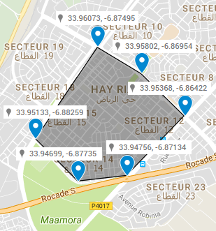

KriAuto est une entreprise innovante qui
propose des solutions de suivi de flottes
pour tous, notamment les sociétés de
location de voitures qui ont des exigences
absolues dans ce domaine, afin de gérer
leurs parcs auto mobiles et s'assurer
que son utilisation est conforme au
conditions du contrat.
Notre engagement est de fournir à nous
clients le meilleur service en terme de
qualité/prix. Nous commercialisons des
produits haute gamme des deux Leader dans
le domaine de la géolocalisation de flottes
Teltonika et Coban.
Fonctionnalités
Cette fonctionnalité permet de visualiser
la dernière position de chaque voiture du
parc automobile, en affichant plein
d'informations liées à l'état de la voiture
(addresse, vitesse, heure,...)
Cette fonctionnalité permet de visualiser
l'itinéraire d'une voiture pendant une
journée, en affichant la vitesse et l'heure
pour chaque position.
Cette fonctionnalité permet d'immobiliser
une voiture à distance en cas de vol.
Cette fonctionnalité permet de redémarrer
une voiture à distance déjà arrêtée.
Cette fonctionnalité permet d'avoir des
statistiques journalier sur l'état de la
voiture(vitesse maximale,distance parcourue
,carburant consommé (approximatif).
Cette fonctionnalité permet de définir un
périmètre de circulation d'une voiture
(quartier, ville,...).
Cette fonctionnalité permet d'envoyer des
notifications par SMS en cas de dépassement
de vitesse, sortie de territoire, sortie de
zone, ....
Zone Virtuelle.
Pour définir une zone virtuelle, il faut
définir six point entourant cette zone à
partir de google comme le montre la figure
suivante :

Puis ajouter les six points à l'aide
du formulaire suivant :